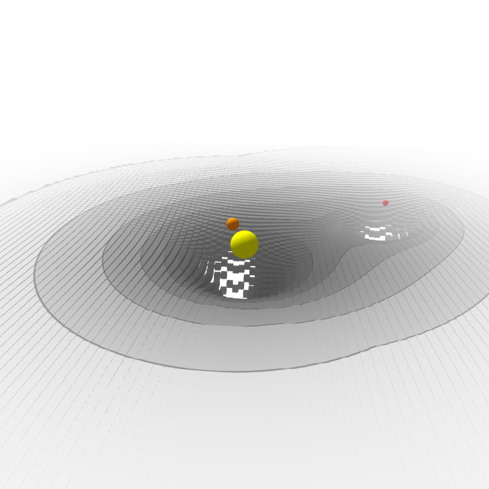
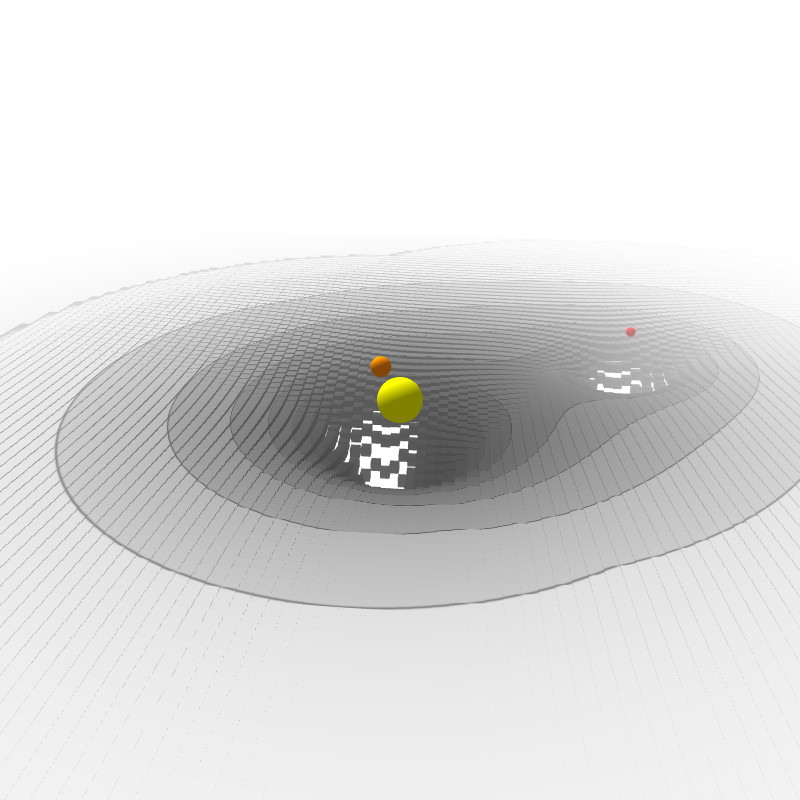

WebGL
- Introduction
- Pipeline de rendu
- Vertex buffers
- Shaders
- Divers
- Adaptation d'un sketch Processing
- Post-traitement
Introduction
Interface de programmation en JavaScript pour le rendu 2D/3D adaptée aux accélérateurs graphiques (GPU)
Expose OpenGL ES 2.0 / 3.0 via un contexte de rendu associé à un élément HTML canvas
Historique:
- 1992: OpenGL 1.0
- 2004: OpenGL 2.0, introduction des shaders
- 2007: OpenGL ES 2.0, smartphones, tablettes, consoles, etc...
- 2011: WebGL 1.0, basé sur OpenGL ES 2.0
- 2011: WebGL 1.0 disponible dans Firefox 4, Chrome 9 et Safari 5.1
- 2011: WebGL 1.0 disponible dans Internet Explorer 11
- 2012: OpenGL ES 3.0, rétro-compatible avec OpenGL ES 2.0
- 2017: WebGL 2.0, basé sur OpenGL ES 3.0
- 2017: WebGL 2.0 disponible dans Firefox 51 et Chrome 56
Introduction
Point de départ: récupérer un contexte WebGL (HTML5 Canvas)
Code HTML
Code JavaScript
var canvas = document.getElementById('canvas');
var gl = canvas.getContext('webgl');
if (!gl)
return;
// Call WebGL methods gl.*
Pipeline de rendu

Vertex buffers - Création
Géométrie stockée dans des vertex buffers
(tableaux de données résidant en mémoire du GPU)
var positions = [
// 2 triangles for +z face
-1.0, -1.0, 1.0,
1.0, -1.0, 1.0,
1.0, 1.0, 1.0,
-1.0, -1.0, 1.0,
1.0, 1.0, 1.0,
-1.0, 1.0, 1.0,
// ...
];
var positionArray = new Float32Array(positions);
var positionBuffer = gl.createBuffer();
gl.bindBuffer(gl.ARRAY_BUFFER, positionBuffer);
gl.bufferData(gl.ARRAY_BUFFER, positionArray, gl.STATIC_DRAW)
gl.bindBuffer(gl.ARRAY_BUFFER, null);
À rapprocher de beginShape() / endShape() en Processing
Vertex buffers - Utilisation
Type de géométrie (triangles, bande de triangles, points, lines) spécifié lors de l'appel à la fonction de rendu DrawArrays()
var numVertices = positions.length / 3;
gl.DrawArrays(gl.TRIANGLES, 0, numVertices);
Shaders
- Vertex shader
- Programme pour calculer la position finale d'un vertex (vertex shader)
- Fragment shader
- Programme pour calculer la couleur finale d'un pixel parcouru lors de la rastérization (fragment shader)
Shaders écrits avec un langage de programmation dédié: GLSL ES
Shaders - GLSL ES
Syntaxe dérivée du C
Additions majeures:
- Types et opérations pour vecteurs / matrices de faible dimensions:
vec(2|3|4),mat(2|3|4) - Opération d'extraction des composantes:
vec3(1.0, 2.0, 3.0).zy - Qualificateurs d'argument de fonction:
in,out,inout - Fonctions: mathématiques (
sin,cos, ...,clamp,mix,smoothstep) et autres (distance,cross,reflect, ...) - Variables de type
attribute(vertex),uniform(globale) etvarying(interpolée) - Variable de sortie:
gl_Position(vertex),gl_FragCoord(fragment) - Point d'entrée:
main()
Shaders - GLSL ES
Limitations:
- Environment d'exécution très limité
- Tableaux à une dimension seulement
- Taille et indexage des tableaux avec expression constante
- Expression constante pour le nombre d'itérations dans une boucle
- ...
Shaders - Vertex shaders
Exemple de vertex shader:
Transformation de position et copie de normale
Code GLSL
attribute vec3 aPosition;
attribute vec3 aNormal;
uniform mat4 uProjectionMatrix;
uniform mat4 uModelViewMatrix;
varying vec3 vNormal;
void main() {
gl_Position = uProjectionMatrix * uModelViewMatrix * vec4(aPosition, 1.0);
vNormal = aNormal;
}
Shaders - Fragment Shader
Exemple de fragment shader: modèle simplifié d'illumination
Code GLSL
precision highp float;
varying vec3 vNormal;
uniform vec3 uAmbient;
uniform vec3 uDiffuse;
uniform vec3 uLightVector;
void main() {
vec3 color = uAmbient;
color += uDiffuse * max(dot(vNormal, normalize(uLightVector)), 0.0);
gl_FragColor = vec4(color, 1.0);
}
Shaders - Création
Compiler un vertex shader à partir du code GLSL sous forme de chaîne de charactère (shaderSource)
Code WebGL
var vertexShader = gl.createShader(gl.VERTEX_SHADER);
// Use gl.FRAGMENT_SHADER for fragment shaders
gl.shaderSource(vertexShader, shaderSource);
gl.compileShader(vertexShader);
if (!gl.getShaderParameter(vertexShader, gl.COMPILE_STATUS)) {
console.log(gl.getShaderInfoLog(vertexShader));
// ...
}
Shaders - Édition de liens
Lier un vertex shader et un fragment shader
en un shader program utilisable avec le pipeline de rendu
Code WebGL
var program = gl.createProgram();
gl.attachShader(program, vertexShader);
gl.attachShader(program, fragmentShader);
gl.linkProgram(program);
if (!gl.getProgramParameter(program, gl.LINK_STATUS)) {
console.log(gl.getProgramInfoLog(program));
// ...
}
gl.useProgram(program);
Shaders - Attributs de vertex et variables uniformes
Attributs de vertex
Code WebGL
gl.bindBuffer(gl.ARRAY_BUFFER, positionBuffer);
var location = gl.getAttribLocation('aPosition');
gl.enableVertexAttribArray(location);
gl.vertexAttribPointer(location, 3, gl.FLOAT, false, 0, 0);
Variables uniformes
Code WebGL
var projectionMatrix = [ /* ... */ ];
var location = gl.getUniformLocation('uProjectionMatrix');
gl.uniformMatrix4fv(location, false, projectionMatrix);
Divers
Code JavaScript
function setup() {
// ...
gl.clearColor(0.0, 0.0, 0.0, 1.0);
gl.enable(gl.DEPTH_TEST);
// ...
}
function draw() {
gl.viewport(0, 0, WIDTH, HEIGHT);
gl.clear(gl.COLOR_BUFFER_BIT | gl.DEPTH_BUFFER_BIT);
// ...
}
Gestion d'évènements et animation
Code JavaScript
window.addEventListener('mousemove', handleMouse, false);
// ...
window.requestAnimationFrame(canvas, animationLoop);
Adaptation d'un sketch Processing
3D Gravity Well (Marvin K)
Portage WebGL:
- Caméra:
- rotation, translation, projection via une classe Matrix4x4
- variable uniforme pour la projection / transformation finale
- Géométrie:
- génération explicite de triangles pour sphère et cube
- vertex buffers pour position et normale
- Matériaux et illumination:
- variable uniforme pour les matériaux et la source de lumière
- calcul d'illumination dans le fragment shader
Taille du code:
- Processing.js: ~ 60 LoC
- WebGL + GLSL: ~ 800 LoC
Adaptation d'un sketch Processing
 

Adaption d'un sketch Processing
3D Gravity Well (Marvin K)
Améliorations possibles en WebGL:
- Anticrénelage: activer l'option antialias
- Plus de géométrie:
- Activer le filtrage des faces vues de dos (backface culling)
- Un seul vertex buffer pour stocker position + normal
- (Encore) plus de géométrie:
- Calcul d'élévation réalisé dans le vertex shader
- Couleur fonction de l'élévation
- Tracé des lignes de niveau de l'élévation
- Post-traitement: brouillard (masque les limites de la grille)
Post-traitement: brouillard (fog)

Références
- Site officiel: WebGL - OpenGL ES for the Web
- Manuel OpenGL ES 2.0: OpenGL ES 2.0 Reference Pages
- Tutoriel MDN: WebGL Tutorial
- Bibliothèque 3D: three.js
- Bibliothèque 3D: BabylonJS
- Exemples WebGL: Chome Experiments (WebGL)
- Exemples GLSL ES: GLSL Sandbox